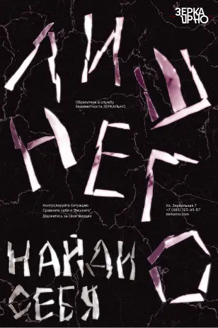
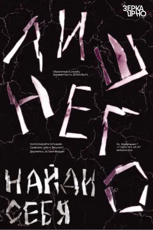

альтернативы
зафиксированные случаи
Собрание реальных инцидентов, произошедших на границах. архив включает заметки кураторов, аудиофрагменты и схемы

экскурсия по лаборатории
Зоны, протоколы и маршруты — узнайте, как устроена лаборатория изнутри

детский путеводитель
Объяснить ребёнку, кто такие альтернативы — непросто. Мы сделали это за вас: безопасно, понятно и в игровой форме

лаборатория
Лаборатория появилась после первых задокументированных случаев взаимодействия с альтернативными версиями личности. Сегодня это центр изучения, наблюдения и сдерживания отражённых. Мы фиксируем аномалии, разрабатываем протоколы и обучаем кураторов по всему миру.
Если вы хотите узнать, как устроена работа внутри и что делать при зеркальном контакте — откройте полный путеводитель
что интересного?
носите знаки пограничья. фирменные значки, футболки, постеры и архивные предметы доступны для заказа

лекции, выставки, разборы инцидентов — следите за активностями лаборатории в открытых зонах
 
